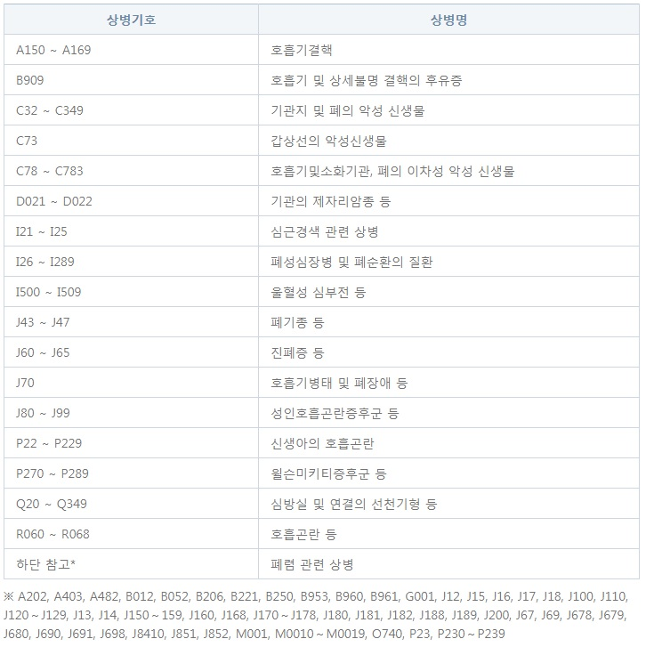
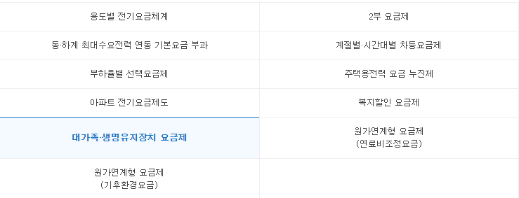

병원에서 산소치료처방전 발급받는 방법

먼저 호흡기 질환 등으로 산소치료가 필요한지를 판단하기 위해 의사와 상담합니다.
의사는 환자의 증상과 검사 결과를 토대로 산소치료가 필요한지를 결정합니다.
의사가 산소치료가 필요하다고 판단하면, 해당 환자에게 필요한 검사를 요청할 수 있습니다.
이는 폐기능 검사(Pulmonary Function Test), 혈액 산소 포화도 측정, 기타 필요한 검사를 포함할 수 있습니다.
검사 결과를 토대로 산소치료가 필요하다는 판단이 확실해지면, 의사는 산소치료에 대한 처방전을 발급합니다.
이 처방전에는 산소치료에 필요한 산소 농도 및 투여 방법 등이 포함됩니다.
산소치료 처방전을 받은 환자는 병원에서 치료 계획을 수립하게 됩니다.
이는 산소치료의 빈도, 기간 등을 포함할 수 있습니다.
산소치료를 받기 위해 필요한 산소공급 장비를 환자가 구비해야 합니다.
산소공급업채로 문의하여 의료용 산소호흡기를 임대 할 수 있습니다.
산소치료를 시작한 후에는 의사의 지시에 따라 치료를 진행하고, 필요한 경우 치료의 효과를 평가하고 조정합니다.
* 산소치료는 의사의 처방에 따라 진행되어야 하며, 의료적인 지도 하에 진행되어야 합니다. 따라서 산소치료를 받기 위해서는 의사와의 상담 및 진단이 필수적이며, 의사의 지시에 따라 치료를 진행해야 합니다.
요양비 보험급여 기준
중증의 만성심폐질환 등으로 산소치료가 필요하다고 인정되는 사람 중 90일 동안의 적절한 치료 후 별도로 시행한 동맥혈가스 검사 또는 산소포화도 검사 결과가 다음 각 항목의 어느 하나에 해당하는 사람.
(단, 90일 미만인 신생아 또는 장애정도가 심한 호흡기 장애인인 경우에는 내과적 치료없이 검사를 시행할 수 있다.)
동맥혈 가스검사
가) 동맥혈 산소분압이 55mmHg 이하인 경우
나) 동맥혈 산소포화도가 88% 이하인 경우
다) 동맥혈 산소분압이 56-59mmHg이면서 적혈구 증가증(헤마토크릿 > 55%)이 있거나, 울혈성 심부전을 시사하는 말초부종이 있거나, 폐동맥 고혈압이 있는 경우
라) 동맥혈 산소포화도가 89% 이상이면서 적혈구 증가증(헤마토크릿 > 55%)이 있거나, 울혈성 심부전을 시사하는 말초부종이 있거나, 폐동맥 고혈압이 있는 경우
산소포화도 검사
가) 산소포화도가 88% 이하인 경우
나) 산소포화도가 89% 이상이면서 적혈구 증가증(헤마토크릿 > 55%)이 있거나, 울혈성 심부전을 시사하는 말초부종이 있거나, 폐동맥 고혈압이 있는 경우
처방의사: 내과전문의, 결핵과전문의, 흉부외과전문의(소아는 소아청소년과 전문의)
처방기간: 1회 1년이내 (2012.10.1 이후 발생분부터 적용)
산소발생기 대여방법과 비용
국민건강보험공단의 지원을 받아 산소발생기를 임대할 수 있습니다.
- 가정용 산소발생기: 산소치료처방전+차상위계층 = 월 0원 (100% 지원)
- 휴대용 산소발생기: 산소치료처방전 발급시 = 월 20,000원 (90% 지원)
(자세히 알아보기를 통해 산소치료 월간 전기요금 30% 할인 정보를 확인하세요.)
* 서류 작성 시 상병명 , 가스검사 등 생소한 단어들 때문에 어렵게 느껴지실 수 있지만, 말 그대로 산소치료처방전으로 병원에서 처방전을 발행 해 드리오니, 걱정안하셔도 됩니다.
서류 작성 및 관련 사항에 대하여 궁금하실 경우 연락주시면 올바른 서류작성여부 서류 등록업무를 도와드리겠습니다.
산소치료기 대여료 지원제도
의료용 산소호흡기를 사용하는 환자의 상병명과 상병코드는 주로 호흡기 질환과 관련이 있습니다.
가장 흔한 상병 중 하나는 만성 폐쇄성 폐질환(COPD)입니다. COPD는 폐쇄성 기관지염과 만성 폐쇄성 폐질환을 포괄하는 용어로, 기침, 가래, 호흡곤란 등을 유발하는 만성 질환입니다.
COPD의 상병코드는 ICD-10 국제통계분류집에서는 J44로 분류됩니다. 이 코드는 COPD의 다양한 형태를 포함하며, 예를 들어 만성 기관지염과 기타 폐색성 질환을 모두 포함합니다.
그 외에도 천식(Asthma), 폐렴(Pneumonia), 폐기종(Emphysema), 폐렴성 섬유화증(Pulmonary Fibrosis) 등의 호흡기 질환을 앓고 있는 환자들도 의료용 산소호흡기를 사용할 수 있습니다.
이러한 질환들은 각각 다른 상병코드를 가지고 있으며, 상황에 따라 다를 수 있습니다.
따라서 정확한 상병명과 상병코드를 확인하기 위해서는 해당 환자의 의료 기록을 확인하고, 의료진과 상담하는 것이 가장 좋습니다.
준비 서류


#산소치료처방전 과 #급여등록신청서 2가지입니다.
1.수진자
처방전을 발급받는 환자의 건강보험증 번호, 성명, 주민등록번호, 전화번호를 기재합니다.
2.진료과목
처방전발행을 위하여 진료를 받았던 진료과목을 기재합니다.
내과전문의 / 결핵과전문의/흉부외과 전문의 진료만 적으셔야 하며, 소아는 소아청소년전문의만 해당되오니, 참고부탁드립니다.
3. 상병명과 상병코드
호흡기 질환에 대한 상병코드가 들어가 있어야 합니다.
4. 산소처방 지시사항
산소처방 지시사항은 처방 해주시는 의사선생님의 진찰과 소견을 작성해주시는 공간입니다.
5. 동맥혈 가스검사 결과
해당사항 모두 체크 되어야합니다.
6. 산소치료 처방기간
처방전은 1회 최대 1년으로, 기간이 지난 후에는 갱신 발급 받아야 합니다.
7. 요양기관 명칭(기호), 담당의사성명(면허번호),전문과목(전문의 자격번호)산소치료처방전을 발행한 병원의 기관명과 병원의 기호를 기재합니다.
산소치료처방전을 발행한 전문의 이름과 면허번호, 성명을 기재합니다. 서류를 작성한 전문의의 전문과목과 자격번호를 기재합니다.
여기서 꼭 확인하셔야 부분이 "해당 상병으로 90일 동안의 적절한 내과 치료 후' 검사 시행을 한 결과를 인정합니다.
따라서, "내과 전문의의 90일간의 적절한 치료없이 발행된 산소치료처방전은 국민건강보험공단의 지원을 받지 못하실 수 있으니, 꼭! 기간을 확인해주세요.
이런 경우 지원되지 않아요

1년동안 폐섬유화증으로 치료를 받지 않고, 한달에 한번 진료만 받았을때는 90일 중 12일 채웠으므로, 90일이 초과되지 않아, 지원되지 않습니다.
1년동안 만성폐쇄성 질환으로 30일 입원 하였고, 호흡기 질환 관련 약을 30일 투여 한 후, 진료를 한달에 한번 진료를 받았을 때는 72일을 채웠으므로, 마찬가지로 90일이 초과되지 않아, 지원되지 않습니다.
이런 경우 지원돼요

- 6개월 동안 만성폐쇄성으로 60일을 입원 하였고 퇴원 후 천식 관련 약 투여를 60일 한 경우 120일 처방으로 90일을 초과한 경우로 지원이 가능합니다.
" 임대시 고객에게 드리는 추가 혜택 "
- 1. 산소 소모품 무상 제공
- 2. 한전 전기요금 할인 서비스 (업체 서류 제출 대행)
- 3. 건강보험공단 서류 제출 대행
가정용 산소발생기/인공호흡기 전기세 할인 받는법! - 생명유지장치요금제도
호흡기장애, 희귀난치성질환으로 불가피하게 산소발생기 등등 생명유지장치를 사용하는 가구를 대상으로 월간 전기요금을 30% 할인해줍니다!!!

대가족·생명유지장치 요금제는 가족수가 많거나
생명유지를 위한 필수기기를 사용하여
부득이하게 전력사용량이 많은 가구를 대상으로
누진요금을 완화하여 주는 제도 입니다!!
* 산소발생기 대여 혹은 인공호흡기 대여
하시는 분들은 여기에 해당됩니다.
* 산소발생기 임대 시 '전기요금 할인 신청서' 를
작성하여 대신 등록해드리고 있습니다.
이상으로 산소발생기 렌탈 시
전기요금 할인받는 방법이였습니다!!
궁금하신 점이나 다른 문의사항이 있다면 언제든지 문의주세요.
문의하기
산소치료에 관한 궁금증이 있으신가요? 전문가와 상담해보세요.

010-2390-9864